許智超 cchsu@mail.nsysu.edu.tw
資訊架構是數位空間的藍圖，是一種「讓資訊變得有條理」的設計思維。它透過組織、分類、標籤與導航，將龐雜的資料轉化為可理解、可檢索的知識系統。
良好的 IA 設計對使用者與產品具有以下三大價值：
資訊架構並非數位產品的專利，它隱身於我們的生活周遭。透過系統化的組織與分類，IA 協助我們在海量資訊中建立秩序，優化決策效率。
零售空間佈局（超市貨架）： 透過區域化管理（如生鮮、冷凍、日用品），建立直覺的動線，縮短消費者的尋找路徑。
知識組織系統（圖書館索引）： 運用「杜威十進分類法」等標準化邏輯，將龐雜的圖書資源轉化為可檢索的座標，實現精準的館藏管理。
資訊架構不只是簡單的分類，它是一個動態的設計過程，核心目標是為了讓使用者能精準且快速地找到所需內容。
From Information Architecture
情境指的是組織機構的目標、預算、人力、文化以及技術限制。我們必須理解組織機構為什麼要建立這個產品，以及在什麼樣的環境下運作。
以大學課程註冊系統為例：
內容是指系統中所包含的所有資訊單元，或是使用者有可能會用到的資訊的統稱。我們需要分析內容的數量、所有權、格式以及結構。
以影音串流平台 Netflix 為例。 其「內容」支柱包含了數萬部影視作品。為了讓使用者不迷失，要為每部影片定義大量的中繼資料，例如：導演、演員、情緒（例如「感人的」、「緊張的」）、畫質等級等。 這些內容屬性是建立「推薦系統」與「分類瀏覽」的基石，若沒有良好的內容定義，使用者將難以從海量資訊中找到想看的片子。
用戶支柱關注的是誰在使用這個系統？他們的尋找行為為何？他們具備多少專業知識？
考慮一個醫療資訊網站。 如果目標用戶是「專業醫生」，IA 可能會使用大量的專業醫學名詞（如：心肌梗塞，Myocardial Infarction）作為導覽標籤； 但如果目標用戶是「一般病患家屬」，IA 則應調整為更親民的詞彙（如：心臟病發作、胸痛）。 了解用戶的心理模型，才能確保標籤系統與導覽設計不會讓使用者感到挫折。
資訊架構專家的工作，就是找到這三者的交點。
資訊組織系統（Organization Systems）是決定使用者能否在茫茫大海中定位資訊的關鍵。作為 IA 專家，我將針對你提到的組織結構與方案進行深入解析。
組織結構定義了內容單元之間的物理或邏輯關係。選擇正確的結構會直接影響使用者的導覽路徑。
這是最常見的結構，基於「父子關係」建立。使用者從廣泛的概念開始，逐步深入到具體的細節。
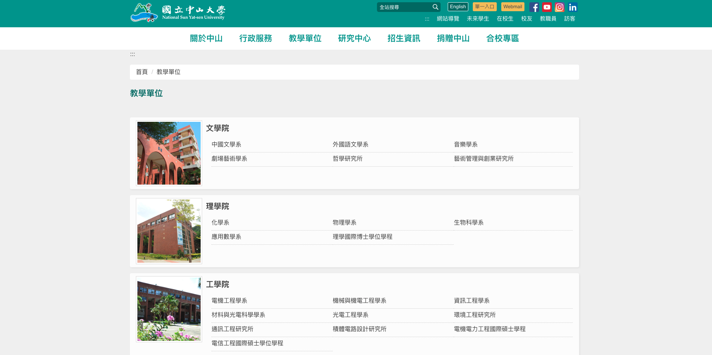
這種結構允許使用者根據自己的需求，從多個維度同時存取資訊。
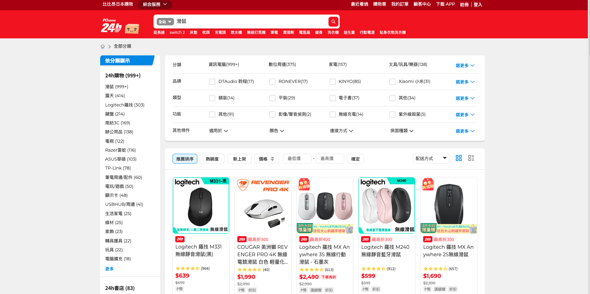
這是一種引導式的結構，要求使用者按照特定的順序從一個步驟移動到下一個步驟。
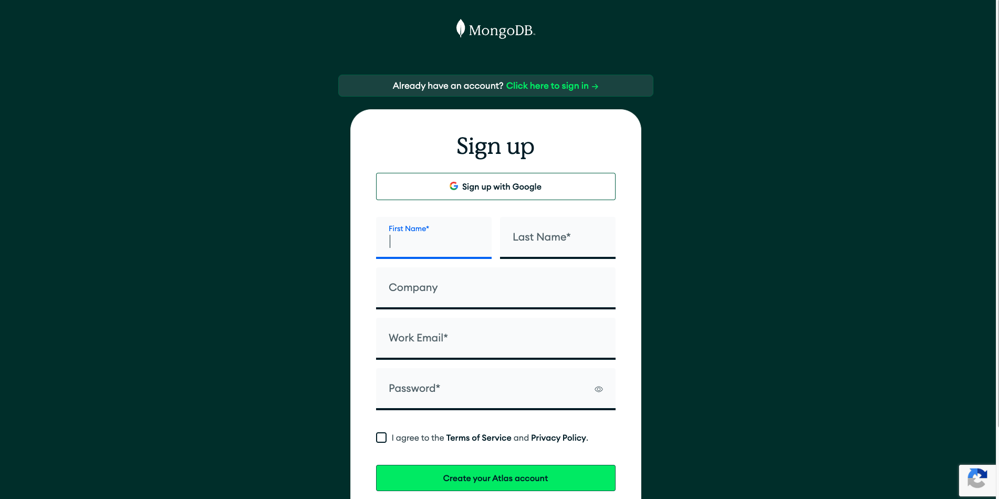
資訊節點之間透過超連結自由連結，沒有固定的路徑。
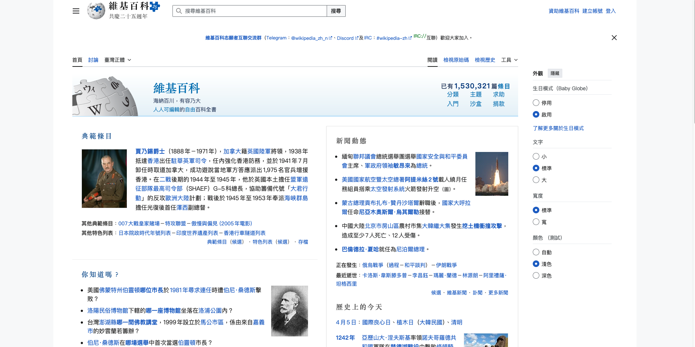
組織方案定義了資訊的分組準則。我們通常將其分為「精確型」與「模糊型」。
這種方案將資訊分成互斥且定義明確的組別，使用者通常知道他們要找的具體目標。
這種方案將資訊分解為具有主觀性的類別。雖然稱為「模糊」，但對於探索性搜尋（不知道確切關鍵字）的使用者來說非常強大。
標籤系統是指在數位環境中，用來代表類別、選項、連結或內容的語言描述。
在資訊架構中，標籤系統就像是導覽指標。如果把網站或 App 比喻成一棟大樓，標籤就是門牌和樓層介紹。它決定了使用者能否快速理解「我在哪裡？」以及「我要去的地方在哪？」。例如：
在一個電商平台，「購物車」是一個標籤。雖然它只是一個圖示加上文字，但它代表了「暫存選購商品的虛擬空間」這個複雜的概念。
命名的核心原則是以使用者為中心，而非「以公司內部術語為中心」。
命名策略：
層級式分類：從廣泛到具體。
主題式分類：根據內容性質分類。
範例：大學官網的命名
這是標籤系統最容易崩壞的地方。如果同一個動作在不同頁面有不同的名字，使用者就會感到困惑。
準確性 標籤必須誠實。如果標籤寫著「免費下載」，點進去後卻要求註冊或付費，這就是標籤不準確。
一致性 這包含詞彙一致性與視覺一致性。
圖示可以增加視覺美感並節省空間，但「圖示是輔助，文本是核心」。除了極少數公認的圖示（如：放大鏡代表搜尋、齒輪代表設定），大多數圖示若沒有文字標籤，都會產生歧義。
良好的標籤系統應該讓使用者感覺「理所當然」，當他們不需要停下來思考標籤是什麼意思時，你的設計就成功了。
在網站或應用程式的設計中，導覽系統就像是一份地圖與路標，指引使用者「我現在在哪裡」、「我能去哪裡」以及「我該如何回去」。
良好的導覽系統能降低使用者的認知負荷，讓資訊架構 變得直觀且易於探索。
這些是構成網站架構的核心，幫助使用者在不同的資訊層級間穿梭。
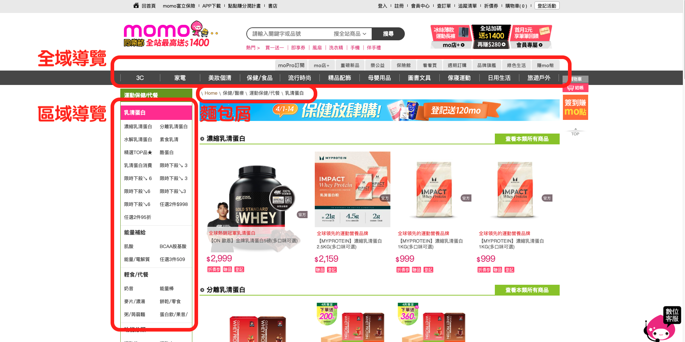
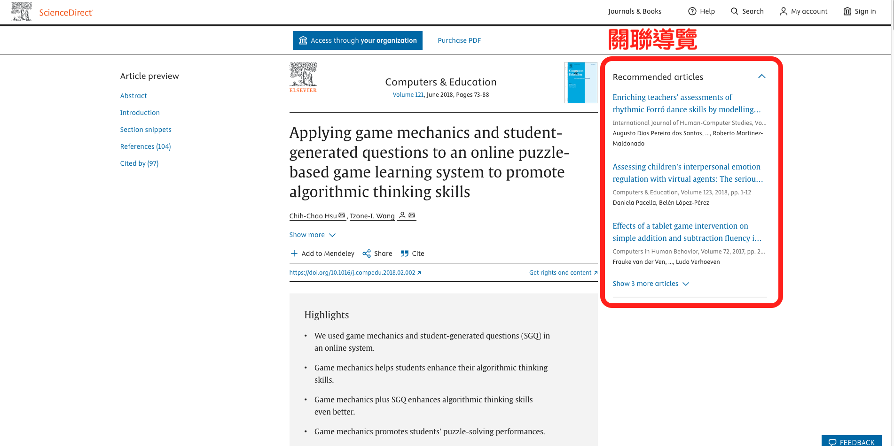
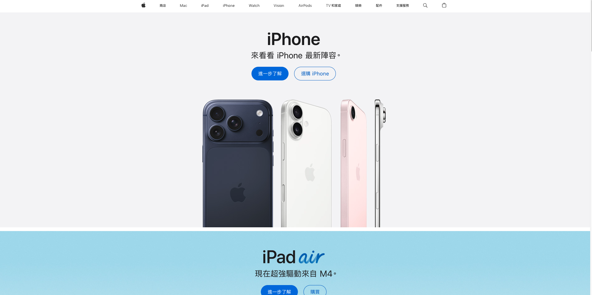
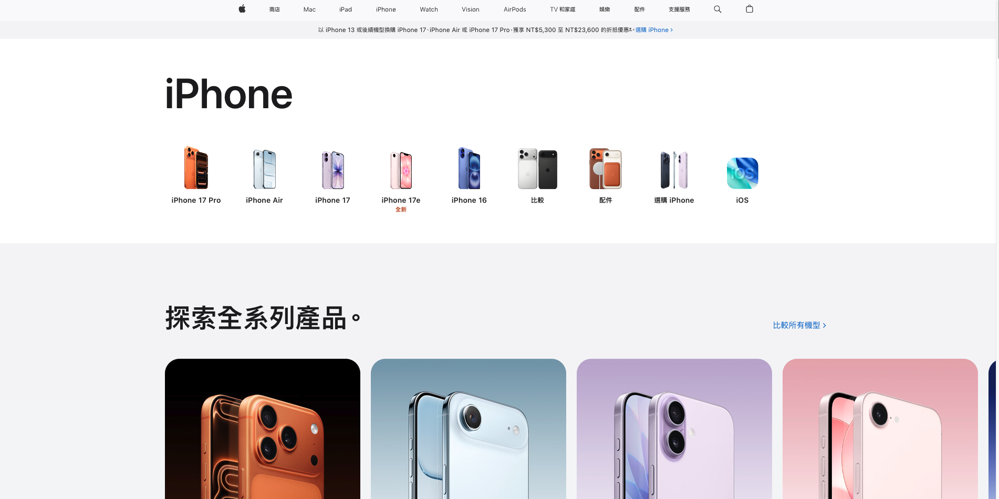
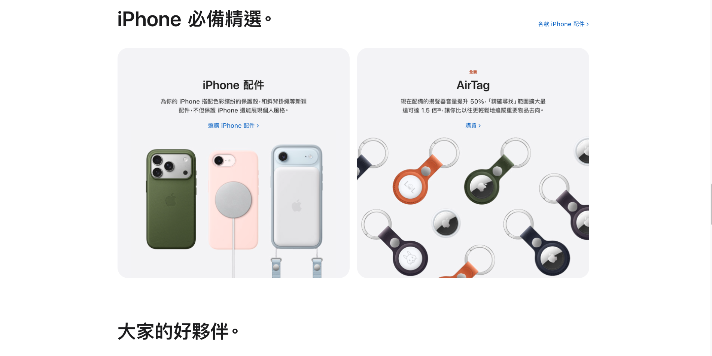
當主要導覽不足以支撐複雜路徑時，輔助導覽能提供額外的支援，防止使用者迷路。
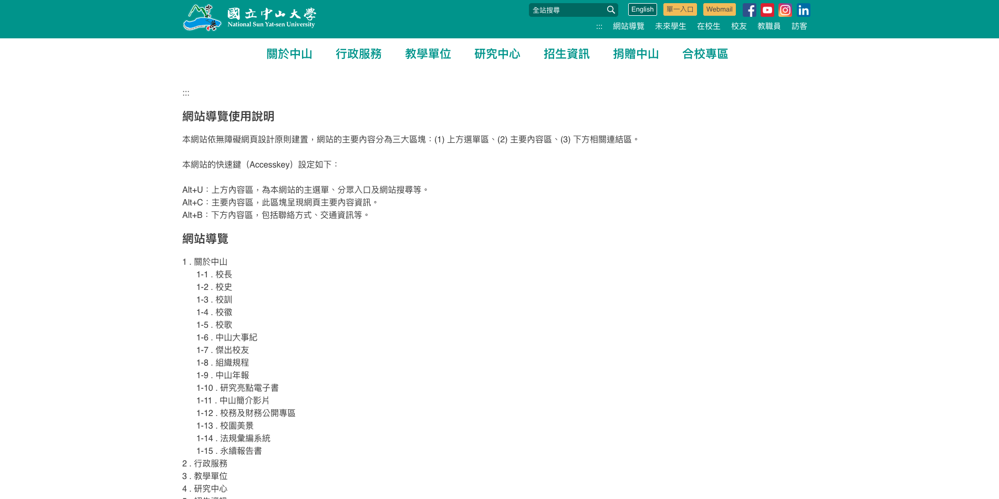
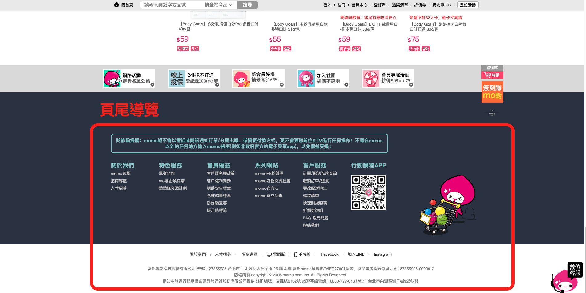
在資訊架構的範疇中，搜尋系統（Search Systems） 是使用者在無法透過瀏覽快速找到資訊時的關鍵路徑。它不只是個「搜尋框」，而是一套包含語意理解、資料檢索與結果呈現的複雜機制。
並非所有網站都一定要有搜尋功能。通常在以下情境，搜尋系統是必不可少的：
有效的搜尋系統能降低使用者的認知負荷，讓他們在混亂的資料中，能精準地找到目標。
在使用者輸入過程中即時顯示預測結果。這能減少輸入錯誤，並引導使用者使用系統偏好的關鍵字。
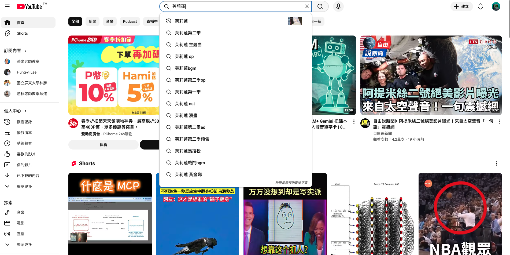
搜尋結果不應只是隨機列出，必須根據「相關性（Relevancy）」進行排序。
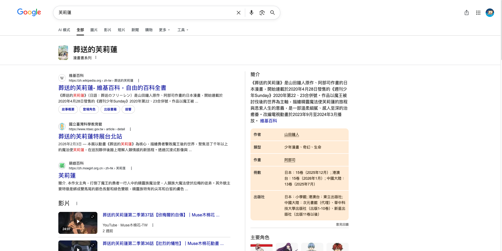
篩選通常是全域的（如：僅看 4 顆星以上）；分頁導覽則是根據搜尋結果的屬性動態產生的。
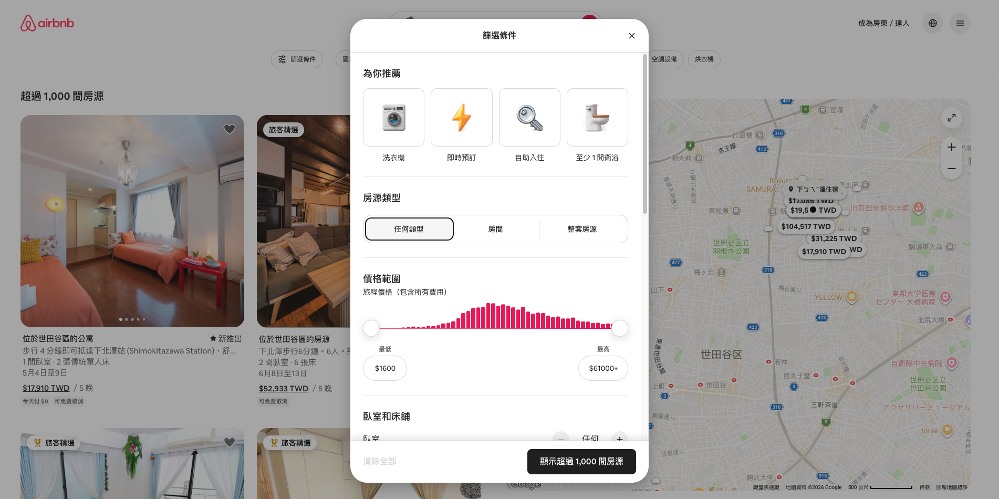
在構建一個資訊系統時，最核心的挑戰在於確保「開發者想的」與「使用者想的」達成一致。這正是卡片分類法與樹狀測試發揮作用的地方。
在開放式分類中，參與者會拿到一疊寫有內容標題或功能的卡片，他們需要將這些卡片按照自己的邏輯分組，並為每一組「自行命名」標籤。
假設我們正在設計一個大型電商平台的首頁。我們給使用者卡片包含：電風扇、除濕機、吸塵器、平底鍋、氣炸鍋。 使用者 A 可能會將前三者歸類為「生活家電」，後兩者歸類為「廚房用具」。 使用者 B 則可能將吸塵器與除濕機歸類為「居家環境」，將電風扇、平底鍋、氣炸鍋歸類為「其他」。 透過分析大量使用者的分類結果，我們能找出最普遍的分類共識。
參與者同樣會拿到卡片，但他們必須將卡片歸類到「既定」的類別框架中，不能自行命名新的標籤。
同樣的電商案例，我們已經決定了兩個分類：「家電用品」與「廚房設備」。 如果使用者將「氣炸鍋」猶豫不決地放進這兩個分類，或者放錯地方，這表示標籤的定義可能重疊，需要進一步調整。
如果說卡片分類是為了「建立架構」，那麼樹狀測試就是為了「驗證架構」。 樹狀測試通常會去除所有的視覺設計（如顏色、圖示、排版），只呈現純文字的層級目錄。研究員會給使用者一個具體的任務，觀察他們是否能在這棵「資訊樹」中找到目標。
資訊架構如右圖，在樹狀測試中，我們會給受測者一個目標，看他們會點選哪條路徑。
兩者通常會搭配使用：
網站地圖是資訊架構中最具代表性的產出。它是一個視覺化的階層結構圖，用來展示網站或應用程式的導航框架。它的目的在於定義頁面與頁面之間的父子關係與並列關係。
一個好的網站地圖會標註出：
假設我們正在規劃一個服飾電商，其網站地圖的結構可能如下：
使用者流程關注的是動態的路徑。當使用者帶著特定目標進入系統時，資訊如何引導他們從起點走向終點。這有助於發現結構中的斷點或邏輯漏洞。
這通常包含：
From Figma
想像你走進一間超市，商品如果是隨機擺放的，你可能得花 30 分鐘才能找到一瓶牛奶。但如果超市內有清楚的分類區（飲料區、乳製品區、冷藏區），並且每個貨架上都有清晰的標籤，那麼你可能 2 分鐘內就能找到你要的商品。 透過合理的分類、分區與命名方式，不僅能讓使用者更快找到所需，也提升整體資訊的可讀性與可操作性。資訊架構，是讓資訊變得有條理的設計關鍵！ 這就是資訊架構設計的核心價值，良好的 IA 可以降低使用者尋找資訊的成本，提升使用者的效率，同時等於提升產品或服務的使用體驗。